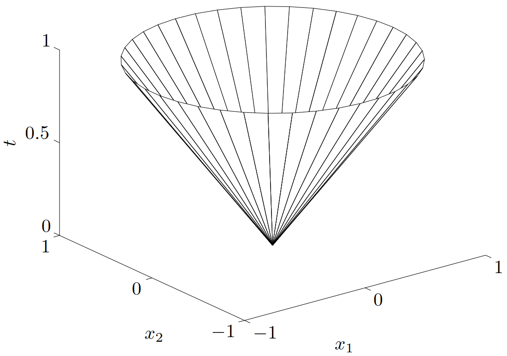
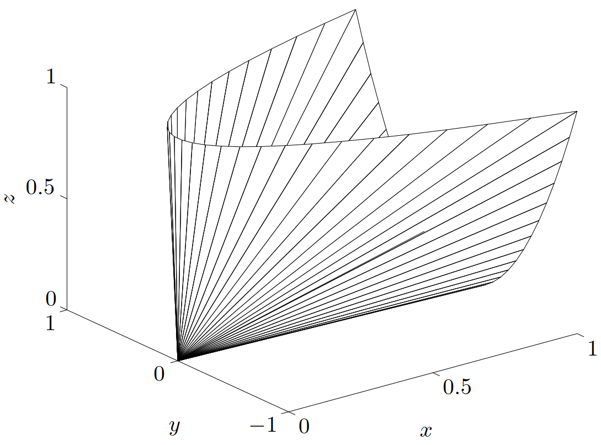

Josh's Note — 凸优化
Part 1.2 凸集—一些重要的凸集
$\newcommand{\bfR}{\mathbf{R}} \newcommand{\bfS}{\mathbf{S}} \newcommand{\TT}{\mathrm{T}} \newcommand{\E}{\mathcal{E}} \newcommand{\P}{\mathcal{P}} \def\conv{\mathop{\bf conv}}$ 本文将描述一些重要的凸集。首先介绍一些简单的例子。
空集 ∅、任意一个点（即单点集（singleton））{x0} 、全空间 $\bfR^n$ 都是 $\bfR^n$ 的仿射（自然也是凸的）子集。
任意直线是仿射的。如果直线通过零点，则是子空间，因此，也是凸锥。
一条线段是凸的，但不是仿射的（除非退化为一个点）。
一条射线（ray），即具有形式 {x0 + θv ∣ θ ≥ 0}, v ≠ 0 的集合，是凸的，但不是仿射的。如果射线的基点 x0 是 0，则它是凸锥。
任意子空间是仿射的、凸锥（自然是凸的）。
1. 超平面与半空间
超平面（hyperplane）是具有如下形式的集合
$$ \left\{ x\mid a^\TT x = b \right\} $$
其中 $a \in \bfR^n, a \ne 0$ 且 $b \in \bfR$。解析地来看，超平面是关于 x 的非平凡线性方程的解空间（因此是一个仿射集合）。几何上，超平面 $\left\{ x\mid a^\TT x = b \right\}$ 可以理解为与给定向量 a 的内积为常数的点的集合；也可以看成法线方向为 a 的超平面，而常数 $b \in \bfR$ 决定了这个平面从原点的偏移。为更好地理解几何含义，可以将超平面表示成
$$ \left\{ x\mid a^\TT (x - x_0) = 0 \right\} $$
其中 x0 是超平面上的任意一点（即任意满足 $a^\TT x_0 = b$ 的点）。进一步，可以表示为
$$ \left\{ x\mid a^\TT (x - x_0) = 0 \right\} = x_0 + a^\perp $$
其中 a⟂ 表示 a 的正交补，即与 a 正交的向量的集合：
$$ a^\perp = \left\{ v\mid a^\TT v = 0 \right\} $$
从中可以看出，超平面由偏移 x0 加上所有正交于（法）向量 a 的向量构成，具体可见图 6 。
一个超平面将 $\bfR^n$ 划分为两个半空间（halfspaces）。（闭的）半空间是具有下列形式的集合，
$$\begin{equation}\label{HalfSpace} \left\{x\mid a^\TT x \leqslant b \right\} \end{equation} $$
即（非平凡的）线性不等式的解空间，其中 a ≠ 0。半空间是凸的，但不是仿射的，如图 7 所示。
半空间 $\eqref{HalfSpace}$ 也可以表示为
$$ \left\{x\mid a^\TT (x - x_0) \leqslant 0 \right\} $$
其中 x0 是相应超平面上的任意一点，即 x0 满足 $a^\TT x_0 = b$。上式有一个简单的几何解释：半空间由 x0 加上任意与（向外的法）向量 a 呈钝角（或直角）的向量组成，如图 8 所示。
半空间 $\eqref{HalfSpace}$ 的边界是超平面 $\left\{x\mid a^\TT x = b \right\}$。集合 $\left\{x\mid a^\TT x < b \right\}$ 是半空间 $\left\{x\mid a^\TT x \leqslant b \right\}$ 的内部，称为开半空间（open halfspace）。
2. Euclid球和椭球
$\bfR^n$ 中的空间 Euclid 球（Euclidean ball）（或简称为球）具有下面的形式：
$$ B(x_c,r) = \left\{x\mid \left\| x - x_c \right\|_2 \leqslant r \right\} = \left\{ x\mid (x-x_c)^\TT(x-x_c) \leqslant r^2 \right\} $$
其中 r > 0，∥ ⋅ ∥2 表示 Euclid 范数，即 $\|u\|_2 = (u^\TT u)^{1/2}$。向量 xr 是球心（center），标量 r 为半径（radius）。B(xc, r) 由距离球心 xr 距离不超过 r 的所有点组成。 Euclid 球的另一个常见的表达式为：
B(xc, r) = {xc + ru∣∥u∥2 ≤ 1}
Euclid 球是凸集，即如果 ∥x1 − x2∥ ≤ r，∥x2 − xc∥ ≤ r，并且 0 ≤ θ ≤ 1，那么
$$\begin{aligned} \left\| \theta x_1 + (1- \theta)x_2 - x_c\right\|_2 &= \left\| \theta(x_1 - x_c) + (1-\theta)(x_2 - x_c)\right\|_2 \\ &\leqslant \theta \left\|x_1 - x_c\right\|_2 + (1-\theta) \left\| x_2 - x_c \right\|_2 \\ & \leqslant r \end{aligned}$$
（这里利用了 ∥ ⋅ ∥2 的齐次性和三角不等式。）
一类相关的凸集是椭球（ellipsoid），它们具有如下的形式：
$$\begin{equation}\label{ellipsoid-1} \E = \left\{ x\mid (x-x_c)^\TT P^{-1}(x-x_c) \leqslant 1 \right\} \end{equation}$$
其中 $P = P^\TT \succ 0$，即 P 是对称正定矩阵。向量 $x_c \in \bfR^n$ 为椭球的中心。矩阵 P 决定了椭球从 xc 向各个方向扩展的幅度。$\E$ 的半轴长度由 $\sqrt{\lambda_i}$ 给出，这里 λi 为 P 的特征值。球可以看成 P = r2I 的椭球。图 9 给出了 $\bfR^2$ 上的一个椭球。
椭球另一个常用的表示形式是
$$\begin{equation}\label{ellipsoid-2} \E = \left\{ x_c + Au\mid \|u\|_2 \leqslant 1 \right\} \end{equation}$$
其中 A 是非奇异的方阵。在此类表示形式中，可以不失一般性地假设 A 对称正定。取 A = P1/2，这个表达式给出了由式 $\eqref{ellipsoid-1}$ 定义的椭球。当式 $\eqref{ellipsoid-2}$ 中的矩阵 A 为对称半正定矩阵，但奇异时，集合 $\eqref{ellipsoid-2}$ 称为退化的椭球（degenerate ellipsoid），其仿射维数等于 A 的秩。退化的椭球也是凸的。
3. 范数球和范数锥
设 ∥⋅∥ 是 $\bfR^n$ 中的范数。由范数的一般性质可知，以 r 为半径，xc 为球心的范数球（norm ball） {x∣∥x − xc∥ ≤ r} 是凸的。关于范数 ∥⋅∥ 的范数锥（norm cone）是集合
$$ C = \left\{ (x,t)\mid \|x\| \leqslant t \right\} \subseteq \bfR^{n+1} $$
顾名思义，它是一个凸锥。
举例 二阶锥（second-order cone）是由 Euclid 范数定义的范数锥，即
$$\begin{aligned} C &= \left\{ (x,t) \in \bfR^{n+1}\mid \|x\|_2 \leqslant t\right\} \\ &= \left\{ \left[\begin{array}{c} x \\ t \end{array} \right]\middle| \left[\begin{array}{c} x \\ t \end{array} \right]^\TT\left[\begin{array}{c} I & 0 \\ 0 & -1 \end{array} \right] \left[\begin{array}{c} x \\ t \end{array} \right] \leqslant 0,\ t\geqslant 0 \right\} \end{aligned}$$
二阶锥的其他名字也常常被使用。它由二次不等式定义，因此也被称为二次锥（quadratic cone）。同时，也称其为 Lorentz 锥（Lorentz cone）或冰激凌锥（ice-cream cone）。图 10 显示了 $\bfR^3$ 上一个的二阶锥。

4. 多面体
多面体（polyhedron）被定义为有限个线性等式和不等式的解集：
$$\begin{equation}\label{polyhedron-1} \P = \left\{ x\mid a_j^\TT x \leqslant b_j,\ j = 1,\cdots,m,\ c_j^\TT x = d_j,\ j = 1,\cdots,p\right\} \end{equation}$$
因此，多面体是有限个半空间和超平面的交集。仿射集合（例如子空间、超平面、直线）、射线、线段和半空间都是多面体。显而易见，多面体是凸集。有界的多面体有时也称为多胞形（polytope），但也有一些作者反过来使用这两个概念（即用多胞形表示具有 $\eqref{polyhedron-1}$ 形式的集合，而当其有界时称为多面体）。图 11 显示了一个由五个半空间的交集定义的多面体。
可以方便地使用紧凑表达式
$$\begin{equation}\label{polyhedron-2} \P = \left\{ x\mid Ax \preceq b,\ Cx = d \right\} \end{equation}$$
来表示 $\eqref{polyhedron-1}$，其中
$$ A = \left[\begin{array}{c} a_1^\TT \\ \vdots \\ a_m^\TT \end{array}\right],\qquad C = \left[\begin{array}{c} c_1^\TT \\ \vdots \\ c_p^\TT \end{array}\right] $$
此处的 ≼ 代表 $\bfR^m$ 上的向量不等式（vector inequality）或分量不等式（componentwise inequality）：u ≼ v 表示 ui ≤ vi, i = 1, ⋯, m。
举例 非负象限（nonnegative orthant）是具有非负分量的点的集合，即
$$ \bfR_+^n = \left\{ x\in\bfR^n\mid x_i \geqslant 0,\ i = 1,\cdots,n \right\} = \left\{ x\in \bfR^n\mid x \succeq 0 \right\} $$
（此处 $\bfR_+$ 表示非负实数的集合，即 $\bfR_+ = \left\{ x\in\bfR\mid x \geqslant 0 \right\}$。）非负象限既是多面体也是锥（因此称为多面体锥（polyhedral cone））。
4.1 单纯形
单纯形（simplex）是一类重要的多面体。设 k + 1 个点 $v_0,\cdots,v_k \in \bfR^n$ 仿射独立，即 v1 − v0, ⋯, vk − v0 线性独立，那么，这些点决定了一个单纯形：
$$\begin{equation}\label{simplex} C = \conv{\{v_0,\cdots,v_k\}} = \left\{ \theta_0v_0 + \cdots + \theta_k v_k\mid \theta \succeq 0,\ \mathbf{1}^\TT\theta = 1 \right\} \end{equation}$$
其中 1 表示所有分量均为 1 的向量。这个单纯形的仿射维数为 k，因此也称为 $\bfR^n$ 空间的 k 维单纯形。
举例 一些常见的单纯形。1 维单纯形是一条线段；2 维单纯形是一个三角形（包含其内部）； 3 维单纯形是一个四面体。
单位单纯形（unit simplex）是由零向量和单位向量 $\mathbf{0}, e_1,\cdots, e_n \in \bfR^n$ 决定的 n 维单纯形。它可以表示为满足下列条件的向量的集合：
$$ x \succeq 0,\qquad \mathbf{1}^\TT x\leqslant 1 $$
概率单纯形（probability simplex）是由单位向量 $e_1,\cdots, e_n \in \bfR^n$ 决定的 n − 1 维单纯形。它是满足下列条件的向量的集合：
$$ x \succeq 0,\qquad \mathbf{1}^\TT x= 1 $$
概率单纯形中的向量对应于含有 n 个元素的集合的概率分布，xi 可理解为第 i 个元素的概率。
为了用多面体来描述单纯形 $\eqref{simplex}$，采用以下步骤将其变换为 $\eqref{polyhedron-2}$ 的形式。由定义可知，x ∈ C 的充要条件是，对于某些 $\theta\succeq 0, \mathbf{1}^\TT\theta=1$, 有 x = θ0v0 + θ1v1 + ⋯ + θkvk。等价地，如果定义 y = (θ1, ⋯, θk) 和
$$ B = \left[ \begin{array}{c} v_1-v_0 & \cdots & v_k-v_0 \end{array} \right] \in \bfR ^{n\times k} $$
则 x ∈ C 的充要条件是
x = v0 + By
对于 y ≽ 0，$\mathbf{1}^\TT y \leqslant 1$ 成立。注意到 v0, ⋯, vk 仿射独立意味着矩阵 B 的秩为 k。因此，存在非奇异矩阵 $A=(A_1,A_2)\in\bfR^{n\times n}$ 使得
$$ AB = \left[ \begin{array}{c} A_1 \\ A_2 \end{array} \right] B = \left[ \begin{array}{c} I \\ 0 \end{array} \right] $$
用 A 左乘 $\eqref{IFFCondition}$，得到
A1x = A1v0 + y, A2x = A2v0
从中可以看出，x ∈ C 当且仅当 A2x = A2v0 并且向量 y = A1x − A1v0 满足 y ≽ 0 和 $\mathbf{1}^\TT y \leqslant 1$。换言之得到了 x ∈ C 的充要条件，
$$ A_2 x = A_2 v_0, \qquad A_1 x \succeq A_1 v_0, \qquad \mathbf{1}^\TT A_1 x \leqslant 1 + \mathbf{1}^\TT A_1 v_0 $$
这些是 x 的线性等式和不等式，因此，描述了一个多面体。
4.2 多面体的凸包描述
有限集合 {v1, ⋯, vk} 的凸包是
$$ \conv\{v_1,\cdots,v_k\} = \left\{ \theta_1 v_1 + \cdots + \theta_k v_k\mid \theta \succeq 0, \ \mathbf{1}^\TT \theta = 1 \right\} $$
它是一个有界的多面体，但是（除非是例如单纯形这样的特殊情况）无法简单地用形如 $\eqref{polyhedron-1}$ 的式子，即用线性等式和不等式的集合将其表示。
凸包表达式的一个扩展表示是，
{θ1v1 + ⋯ + θkvk ∣ θ1 + ⋯ + θm = 1, θi ≥ 0, i = 1, ⋯, k}
其中 m ≤ k。此处我们考虑 vi 的非负线性组合，但是仅仅要求前 m 个系数之和为一。此外，我们可以将 $\eqref{ExtendedHull}$ 解释为点 v1, ⋯, vm 的凸包加上点 vm + 1, ⋯, vk 的锥包。集合 $\eqref{ExtendedHull}$ 定义了一个多面体，反之亦然，每个多面体都可以表示为此类形式（虽然这一点此处并未证明）。
“如何表示多面体”这一问题的求解是十分巧妙的，并且有一些非常实用的结果。一个简单的例子是定义在 ℓ∞-范数空间的 $\bfR^n$ 上的单位球，
C = {x ∣ |xi| ≤ 1, i = 1, ⋯n}
C 可以由 2n 个线性不等式 $\pm e_i^\TT x \leqslant 1$ 表示为 $\eqref{polyhedron-1}$ 的形式，其中 ei 表示第 i 维的单位向量。为了将其描述为形如 $\eqref{ExtendedHull}$ 的凸包，需要至少 2n 个点：
$$ C = \conv\{v_1,\cdots,v_{2^n}\} $$
其中 v1, ⋯, v2n 是以 1 和 −1 为分量的全部向量，共 2n 个。可见，当 n 很大时，这两种描述方式的规模相差极大。
5. 半正定锥
用 $\bfS^n$ 表示对称 n × n 矩阵的集合，即
$$ \bfS^n = \left\{ X \in \bfR ^{n\times n}\mid X = X^\TT \right\} $$
这是一个维数为 n(n + 1)/2 的向量空间。用 $\bfS^n_+$ 表示对称半正定矩阵的集合：
$$ \bfS^n_+ = \left\{ X \in \bfS^n\mid X \succeq 0 \right\} $$
用 $\bfS^n_{++}$ 表示对称正定矩阵的集合：
$$ \bfS^n_{++} = \left\{ X \in \bfS^n\mid X \succ 0 \right\} $$
（这些符号与 $\bfR_+$ 相对应：$\bfR_+$ 表示非负实数，而 $\bfR_{++}$ 表示正实数。）
集合 $\bfS^n_+$ 是一个凸锥：如果 θ1, θ2 ≥ 0 并且 $A,B\in\bfS^n_+$，那么 $\theta_1 A + \theta_2 B\in\bfS^n_+$。从半正定矩阵的定义可以直接得到：对于任意 $x \in \bfR^n$，如果 A ≽ 0，B ≽ 0 并且 θ1, θ2 ≥ 0，那么有
$$ x^\TT (\theta_1 A + \theta_2 B)x = \theta_1 x^\TT A x + \theta_2 x^\TT Bx \geqslant 0 $$
举例 $\bfS^2$ 上的半正定锥（Positive semidefinite cone）。我们有
$$ X = \left[\begin{array}{c} x & y \\ y & z \end{array}\right] \in \bfS^2_+ \quad \Longleftrightarrow \quad x\geqslant 0, \quad z \geqslant 0, \quad xz\geqslant y^2 $$
图 12 给出了这个锥的边界，按 (x, y, z) 表示在 $\bfR^3$ 中。

参考文献
- Stephen P. Boyd and Lieven Vandenberghe, Convex optimization. Cambridge, UK: Cambridge University Press, 2004.
- Stephen P. Boyd and Lieven Vandenberghe, 凸优化. 北京: 清华大学出版社, 2013.